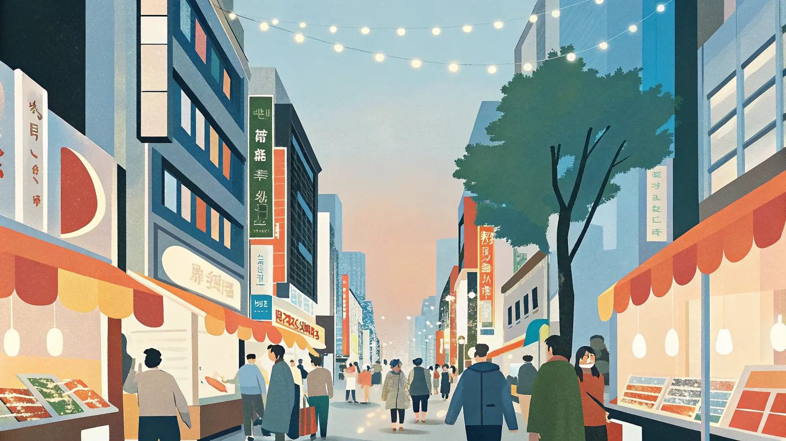

日本人の海外旅行先として例年トップクラスの人気を誇り、2024年には訪韓日本人数が過去最多の約321万人を記録。近さとリピートのしやすさから、年に何度も訪れる「弾丸韓国」ファンも多い。
四季がはっきりしており、日本より気温の振れ幅が大きい。ベストシーズンは桜が咲く4〜5月と紅葉の9〜11月。夏（7〜8月）は蒸し暑く梅雨（チャンマ）もあり、冬（12〜2月）は日本海側並みに冷え込み降雪もある。
ベスト：4〜5月・9〜11月（春の桜と秋の紅葉）
ベスト：4〜6月・9〜10月（過ごしやすい海沿いの気候）
ベスト：4〜5月・10〜11月（古墳群と紅葉の組み合わせ）
ベスト：4〜6月・9〜11月（本土より一足早い春、穏やかな秋）
ベスト：4〜5月・10〜11月（韓屋村散策に心地よい気候）
大陸性気候の影響でソウルの冬は東京よりかなり冷える一方、室内暖房（オンドル）が強いため脱ぎ着しやすい服装が便利。夏はソウルも釜山も湿度が高く、折りたたみ傘・日傘は必携。
太極旗（テグッキ）— 中央の太極図と四隅の卦（けん）が陰陽と宇宙の調和を表す
人気の観光地から穴場まで、実際に行って良かった場所を厳選してまとめました。